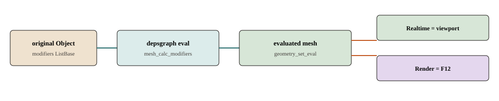

栈在物体上，算在求值时
DNA：Object.modifiers（DNA_object_types.h）。点「添加修改器」只往链表塞 ModifierData。真正变形发生在 depsgraph 的 BKE_object_eval_uber_data。

mesh_calc_modifiers。差别是 eModifierMode_Realtime 还是 Render，以及细分的视口/渲染级别。flowchart TB
calc[mesh_calc_modifiers]
calc --> mode{DAG_EVAL_mode}
mode -->|VIEWPORT| rt[eModifierMode_Realtime]
mode -->|RENDER| rd[eModifierMode_Render]
rt --> vpMesh[viewport_mesh]
rd --> rndMesh[render_mesh]
它解决什么
用户要非破坏地叠变形：基网格进文件，预览在视口，F12 可以用另一套级别。点「添加修改器」只往物体链表塞参数。真正变形发生在 depsgraph 求值，写的是副本。
注册
ModifierTypeInfo（BKE_modifier.hh）：modify_mesh / modify_geometry_set / deform_verts。modifiers/intern/MOD_util.cc 的 modifier_type_init 填表；启动 BKE_modifier_init。查找：BKE_modifier_get_info。
例子：modifierType_Subsurf（MOD_subsurf.cc，可开编辑模式）、modifierType_Mirror（MOD_mirror.cc 的 mirrorModifier__doMirror）。
求值链
GEOMETRY_EVAL -> BKE_object_eval_uber_data
BKE_object_handle_data_update
mesh_data_update
edit_mesh ? editbmesh_calc_modifiers
: mesh_calc_modifiers
BKE_modifier_modify_mesh -> mti->modify_mesh
BKE_object_eval_assign_data / geometry_set_eval
mesh_calc_modifiers（mesh_data_update.cc）按 depsgraph 模式选栈：
const bool use_render = (DEG_get_mode(&depsgraph) == DAG_EVAL_RENDER);
const int required_mode = use_render ? eModifierMode_Render
: eModifierMode_Realtime;
编辑模式先 BKE_mesh_wrapper_from_editmesh。Cage / 最终：BKE_object_get_editmesh_eval_cage 与 _final。BKE_object_eval_uber_data 只转给 BKE_object_handle_data_update，再标 batch cache 脏。
Apply 不是求值
OBJECT_OT_modifier_apply（object_modifier.cc）把当前求值结果烤进原始 Mesh（BKE_mesh_nomain_to_mesh）并删掉该修改器。编辑模式里不能 Apply。求值结果在下次标脏后会重算，不写回文件里的基网格。
geometry / 几何节点
source/blender/geometry/ 是无状态算法库。几何节点是修改器 modifierType_Nodes（MOD_nodes.cc），modify_geometry_set 跑节点树。它不替换 BMesh 编辑。
和邻居的边界
| 动作 | 写谁 | 不写谁 |
|---|---|---|
| 添加修改器 | Object.modifiers 链表 | 基网格顶点 |
| 求值 | 副本 / geometry_set_eval | 文件里的原 Mesh |
| Apply | 烤进原始 Mesh 并删该项 | 编辑模式里的 BMesh |
设计选择
同一套 mesh_calc_modifiers，用 eModifierMode_Realtime 与 Render 分视口和 F12。
常见误解
视口里带着细分预览，不等于已经 Apply。文件里的基网格可以仍是细分前的。
源码符号
BKE_object_eval_uber_data · OBJECT_OT_modifier_apply · Q077 · Q079
渲染章从这份 geometry_set_eval 接着画或送给 Cycles。